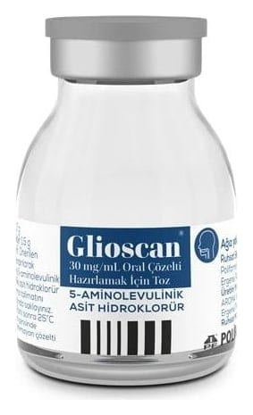

Glioscan 30 mg/mL Oral Çözelti Hazırlamak İçin Toz, 1 ADET

Ne için kullanılır
KT · Bölüm 1GLİOSCAN, şeffaf renkli flakon içerisinde 5-aminolevulinik asit hidroklorür isimli etkin maddeyi içerir. Beyaz veya beyaza yakın renkli liyofilize toz içeren flakon ambalajlarda piyasaya sunulmuştur. GLİOSCAN, tümör cerrahisi sırasında belirli beyin tümörlerinin (malign glioma olarak adlandırılır) görüntülenmesi için kullanılır. Bu ilacı kullanmaya başlamadan önce bu KULLANMA TALİMATINI dikkatlice okuyunuz, çünkü sizin için önemli bilgiler içermektedir. Bu kullanma talimatını saklayınız. Daha sonra tekrar okumaya ihtiyaç duyabilirsiniz. Eğer ilave sorularınız olursa, lütfen doktorunuza veya eczacınıza danışınız. Bu ilaç kişisel olarak sizin için reçete edilmiştir, başkalarına vermeyiniz. Bu ilacın kullanımı sırasında, doktora veya hastaneye gittiğinizde doktorunuza bu ilacı kullandığınızı söyleyiniz. Bu talimatta yazılanlara aynen uyunuz. İlaç hakkında size önerilen dozun dışında yüksek veya düşük doz kullanmayınız.
5-ALA içeren GLİOSCAN, tümör hücrelerinde başka bir maddeye dönüşerek, mavi ışık varlığında tümörün kırmızı-mor ışık yaymasına sebep olur ve normal dokuyla tümör dokusunun ayrımını kolaylaştırır. Bu, cerrahın sağlıklı dokuyu korurken tümör dokusunu çıkarmasına yardımcı olur.